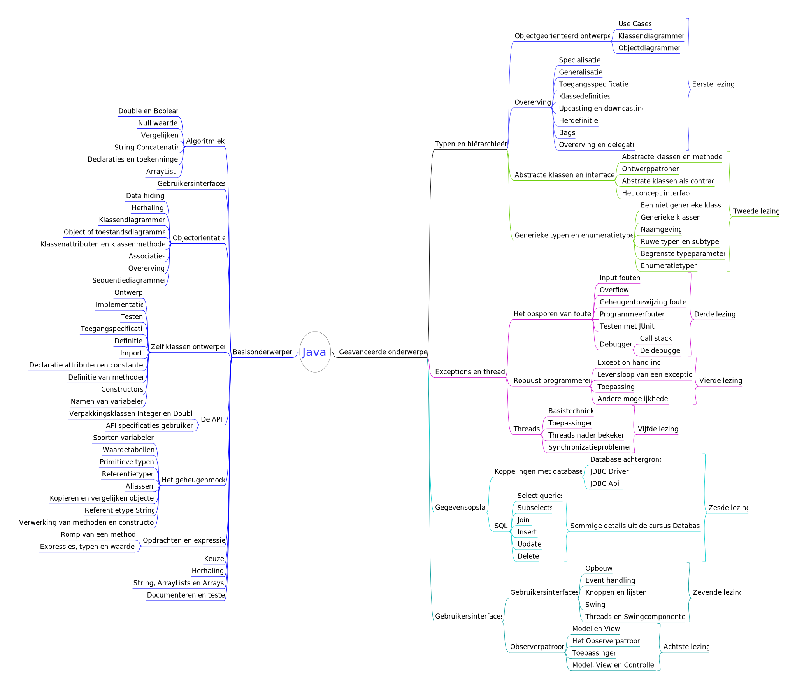

Java
1. Basis en Algoritmiek

2. Objectoriëntatie

3. Zelf klassen ontwerpen

4. De API

5. Het geheugenmodel

6. Objectgeoriënteerd ontwerpen

7. Overerving

8. Abstracte klassen en interfaces

9. Generieke typen en enumeratietypen

10. Het opsporen van fouten

11. Robuust programmeren

12. Threads

13. Koppeling met databases

14. Gebruikersinterfaces

15. Het observerpatroon